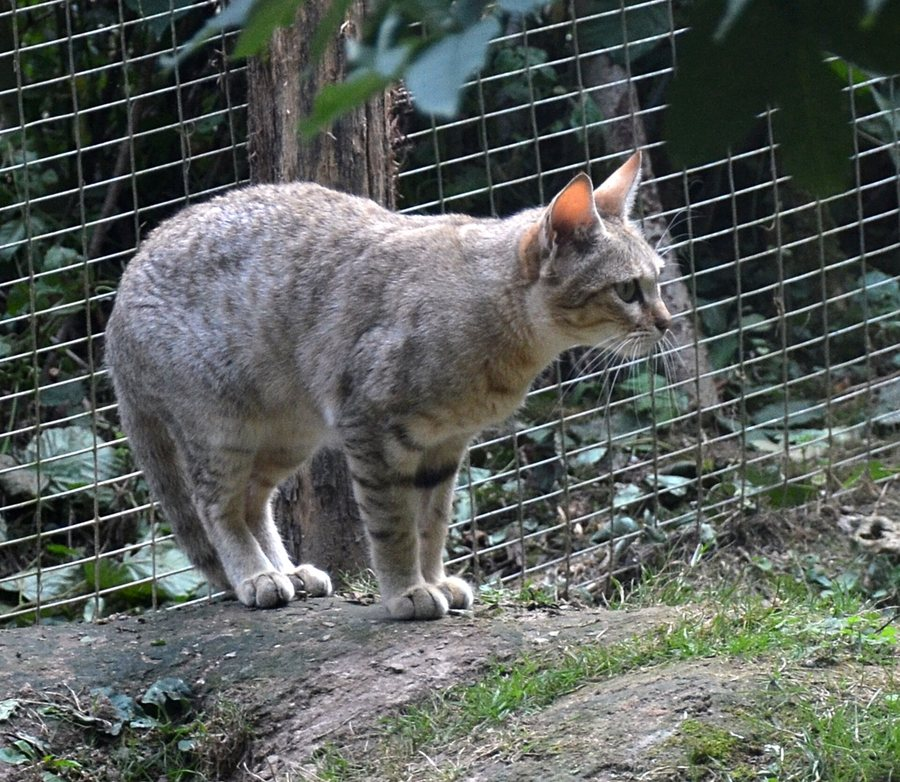

African Wildcat
Felis lybica
The wild ancestor of the domestic cat, closely resembling a lean tabby but with longer legs, reddish backs to the ears, and a far warier manner. Easily overlooked in the grass at dusk.
See photosField notes
- All domestic cats are believed to descend from this species, first tamed in North Africa around 10,000 years ago.
- Hunts alone at night for rodents, birds and insects, relying on stealth rather than speed.
- Hybridises readily with domestic cats near villages, a real conservation concern for the pure wild form.